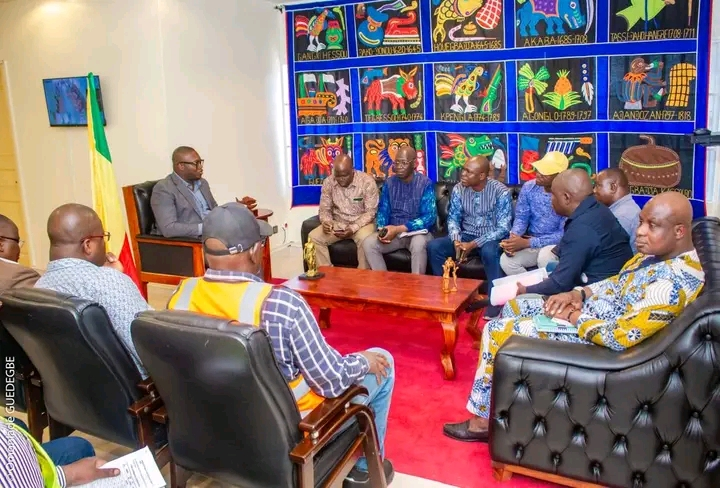
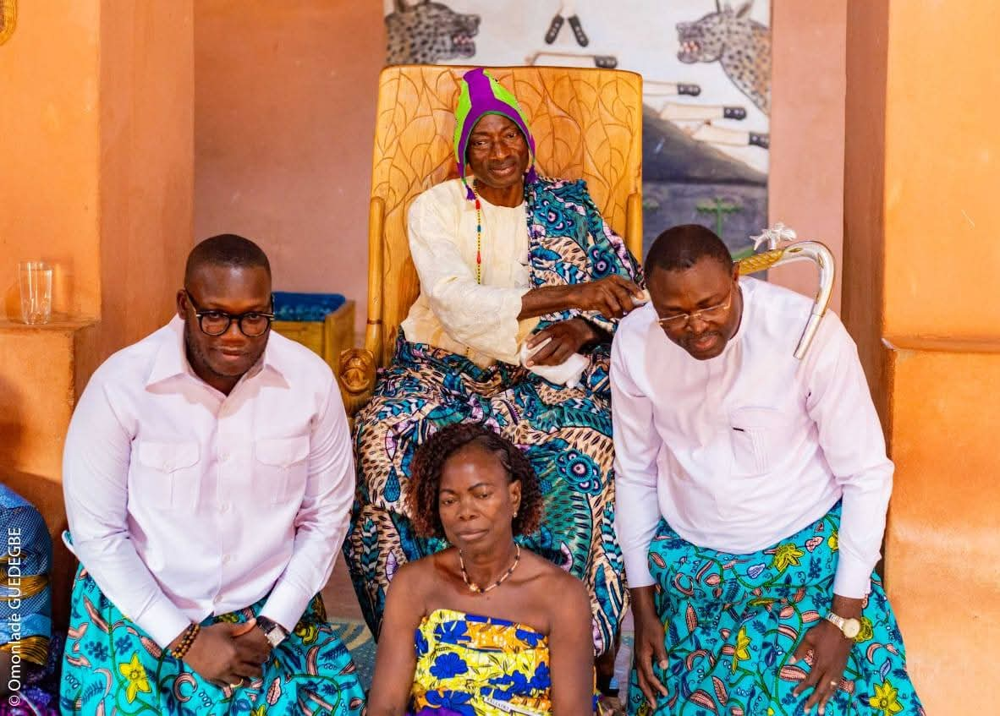
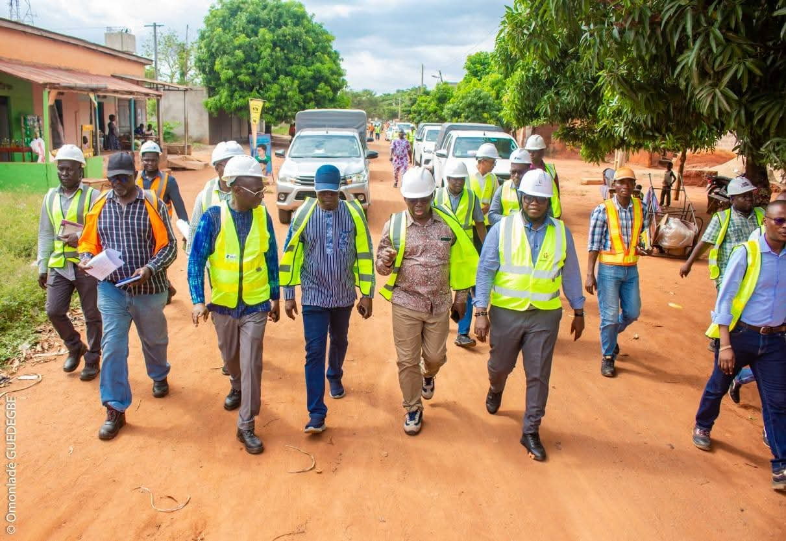
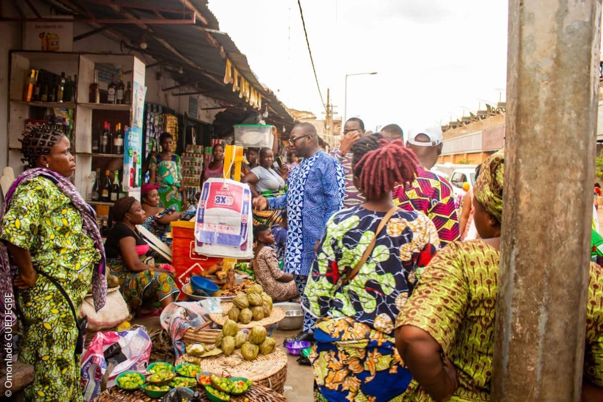
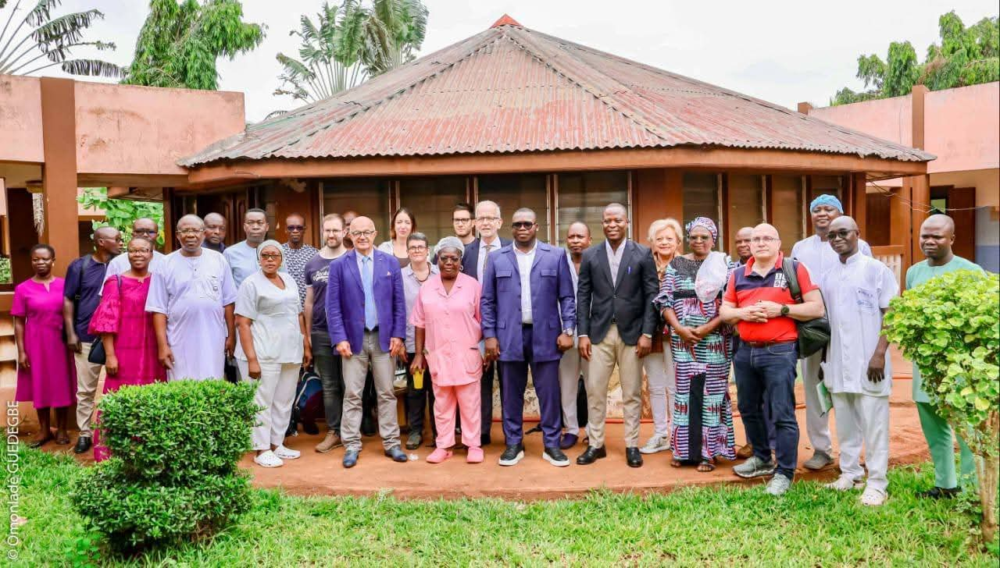
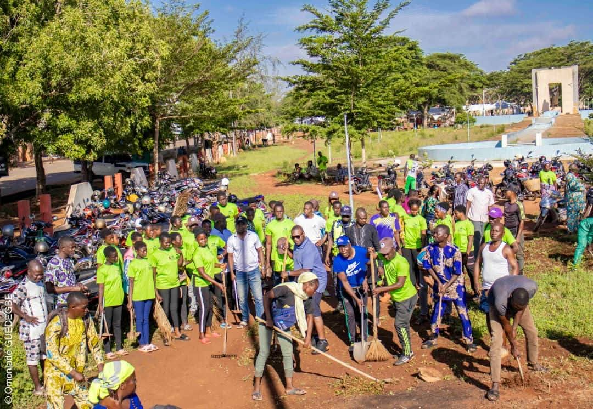
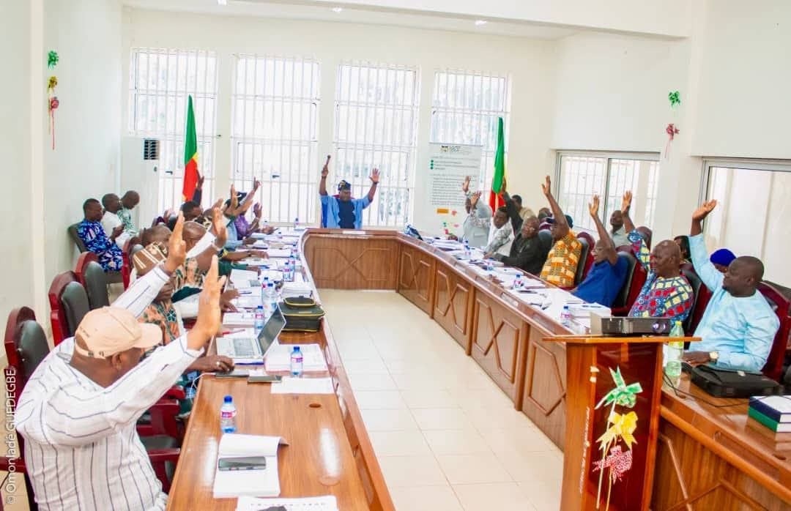

Site Officiel du Maire
de la Commune d'Abomey
de la Commune d'Abomey
Programme officiel du Maire Métolé Franck Kpassassi
Une feuille de route ambitieuse et structurée en 7 axes pour transformer
la Cité Royale du Danxomè et ses 7 arrondissements en un pôle de rayonnement durable.

Intitulé « Abomey, de Cité Royale à Ville Prospère », le programme de Métolé Franck Kpassassi repose sur une conviction profonde : Abomey n'est pas seulement un héritage à préserver — c'est un potentiel à libérer.
Fort de ses compétences d'ingénieur et de gestionnaire de projets, le Maire a conçu une feuille de route structurée, mesurable et réaliste pour les 7 années de son mandat 2026–2033. Chaque axe est assorti d'objectifs précis, d'indicateurs de suivi et d'actions concrètes, déjà engagées dès les premières semaines.
Ce programme articule le respect absolu du patrimoine culturel — Abomey étant classée au Patrimoine Mondial de l'UNESCO depuis 1985 — avec la modernisation résolue des infrastructures, services et outils de gouvernance. Tradition et innovation ne s'opposent pas ici : ils se renforcent.

🏛️ UNESCO 1985Abomey est l'une des rares villes d'Afrique de l'Ouest à abriter un site classé au Patrimoine Mondial de l'UNESCO depuis 1985 : les Palais Royaux du Danxomè. Ce trésor de l'humanité est à la fois l'identité profonde de la commune et son plus grand potentiel de développement.
La vision du Maire est de faire d'Abomey la première destination culturelle et mémorielle du Bénin, en valorisant son patrimoine, en développant les arts et métiers traditionnels, en structurant l'offre touristique et en attirant les visiteurs du monde entier.

🏗️ ModernisationLa transformation d'Abomey passe inévitablement par la modernisation de ses infrastructures. Routes, éclairage public, assainissement, marchés, espaces publics : chaque équipement conditionne la qualité de vie des citoyens et l'attractivité de la commune.
En tant qu'Ingénieur en Ingénierie Énergétique et Électrique et Maître en Énergie Renouvelable, Métolé Franck Kpassassi apporte une expertise rare : celle de penser les infrastructures avec une vision technique, durable et énergétiquement efficace.
Le Maire a affirmé avec force : « La jeunesse d'Abomey est le premier moteur du développement communal. » Cette conviction n'est pas un discours politique — c'est une orientation budgétaire et programmatique concrète.
La transition numérique, l'entrepreneuriat et l'accès à une éducation de qualité sont les trois piliers de cet axe. Abomey doit préparer ses jeunes à être des acteurs compétitifs dans un monde en mutation rapide.

💼 DéveloppementUne commune prospère est une commune qui crée de la richesse pour ses habitants. Le Maire Kpassassi fait de l'économie locale et de l'emploi un axe central, en s'appuyant sur les atouts naturels d'Abomey : sa position géographique, ses marchés traditionnels, ses savoir-faire artisanaux et le potentiel touristique de son patrimoine.
La réforme fiscale du 1er mai 2026 — instauration de nouvelles taxes communales — s'inscrit directement dans cet axe : renforcer les ressources propres de la commune pour financer le développement sans dépendance exclusive aux transferts de l'État.

🏥 Bien-êtreLa santé des habitants est une responsabilité fondamentale de la municipalité. Le Maire Kpassassi place le bien-être physique et social des citoyens au cœur de son mandat, avec une attention particulière aux populations vulnérables : femmes enceintes, enfants, personnes âgées et personnes en situation de handicap.
La cohésion sociale est indissociable de la santé : une commune unie, inclusive et solidaire est une commune qui prospère. Le Maire promeut le dialogue intercommunautaire, l'accès universel aux services sociaux et la lutte contre les inégalités.

🌿 DurableL'expertise de Métolé Franck Kpassassi en Énergie Renouvelable et Efficacité Énergétique se reflète directement dans cet axe. Abomey doit devenir une commune résiliente face aux changements climatiques, propre, verte et dotée d'un cadre de vie agréable pour tous ses habitants.
La gestion des déchets, la préservation des espaces verts, la maîtrise de l'énergie et l'adaptation aux aléas climatiques sont des priorités concrètes pour améliorer le quotidien des 150 000 habitants de la commune.

⚙️ RéformeLa bonne gouvernance est la condition préalable au succès de tous les autres axes. Sans ressources financières propres, sans administration transparente et efficace, sans participation citoyenne active, aucun programme de développement ne peut aboutir.
Le Maire Kpassassi a fait de la gouvernance participative et de l'autonomie financière ses premières priorités opérationnelles. La réforme fiscale du 1er mai 2026 — instauration de nouvelles taxes communales — est la première mesure concrète de cet axe, engagée dès ses premières semaines en fonction.
« Ce programme n'est pas un catalogue de promesses. C'est un contrat signé avec chaque habitant d'Abomey. Je m'y tiens, axe par axe, action par action, arrondissement par arrondissement. »Métolé Franck Kpassassi — Maire de la Commune d'Abomey, 2026
Consolider les bases : autonomie financière, gouvernance participative, diagnostics infrastructurels et premières actions visibles.
Déployer à grande échelle les programmes dans les 7 arrondissements et multiplier les résultats concrets et visibles.
Consolider les acquis, amplifier le rayonnement d'Abomey et préparer l'avenir au-delà de ce mandat.
La réussite du programme « Abomey, de Cité Royale à Ville Prospère » dépend de l'implication de chaque citoyen, entreprise, organisation et partenaire. Avez-vous une idée, un projet, une suggestion ? Le Maire et ses équipes sont à votre écoute.